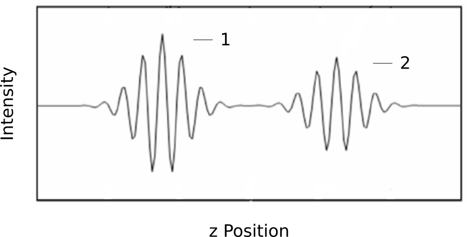

TN_19.9.0.0: First/Last Surface Extraction
Challenge: Interference Envelope of Transparent Samples
For a single scan of transparent and semi-transparent samples a pixel’s interference envelope comprises one peak per reflective interface in the scan range (» Fig. 10).
A single surface is, hence, not defined unambiguously. However, the application may either require measuring the first surface consistently or the last surface consistently.
{kind=link}

Fig. 10 Sample comprising a transparent layer: Typical intensity waveform of a pixel plotted in the z-direction with (1) first surface and (2) second surface
Solution: Amplitude Peak Detection and Thresholding
Use
PeakDetectionModeto distinguish first and last occurrences of amplitude maxima along z in scan direction. Relevant entries are:FirstMax,LastMax,FilteredFirstMax,FilteredLastMax(The latter two use amplitude peak filtering. For more details refer to » vertical-filtering-amplitude-peak).
Note
PeakDetectionMode configures the algorithm used for coarse surface detection. It has no influence when Scan3dExtractionMethod is rawIQ or rawAmp.
If selecting
FilteredFirstMaxorFilteredLastMax, define a value forPeakDetectionFilterWidth.Define a suitable amplitude threshold value to enable the device to separate noise from the relevant signal and write it to
PeakDetectionThreshold. Iteratively optimize the threshold value. Noise-induced surface outliers appear at random height if the value is too low. No surface is detected (pixel’s z data set to end of scanned range) if the threshold value it too high.
Note
A good starting point for PeakDetectionThreshold can be found by first measuring in rawAmp mode and selecting an amplitude value between the noise floor and the envelope peak of interest.
A good starting point for the PeakDetectionFilterWidth is the width of the signal amplitude peak. Filtering slightly reduces peak amplitude. Reduce the value of PeakDetectionThreshold accordingly.
Tips for Narrow Transparent Layers
When peak separation is a small multiple of peak width:
Use minimum vertical spacing (
TargetVerticalSpacingequal to wavelength if BackgroundSuppression = ‘off’, 1.5*wavelength otherwise)Use unfiltered surface detection if peak amplitude is consistently well above noise level (
FirstMaxorLastMax).When using filtered surface detection (
FilteredFirstMax,FilteredLastMax), usePeakDetectionFilterWidthvalues lower than the peak separation (in unit of frames)Use
ExtSimpMaxHWinvalues lower than the peak separation (in units of frames).ExtSimpMaxHwindefines the vertical size of the data window (around the detected peak, in unit of frames) used for (fine) surface extraction. If using a larger data window size, the peak is not properly isolated and adjacent peaks may alter the fine surface result.
Implementation
# Enable first surface detection across the a-scan.
PeakDetectionMode = "FirstMax"
# Configure amplitude threshold
PeakDetectionThreshold = 84
Document History
Version |
Date |
Changes |
Responsible |
|---|---|---|---|
19.9.0.0 |
07-04-2025 |
Initial version |
cl |